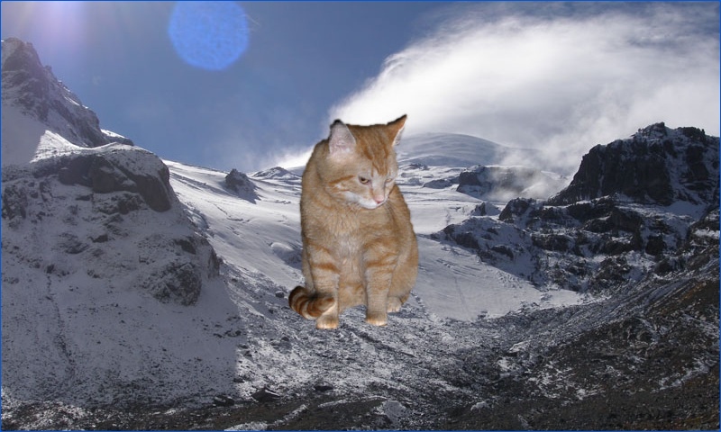

Sprite Effects
Ported from Microsoft's XNA 4.0 Sprite Effects Sample.
Source for this sample on GitHub ↗

Play ▸Opens in a new tab and runs in this browser. Click the canvas first so it receives the keyboard.
About this sample
This sample demonstrates five custom pixel-shader techniques while keeping the familiar SpriteBatch drawing model. It begins with four views of a glacier at different saturation levels, including one that pulses between colour and grayscale.
The remaining views dissolve a moving cat with a scrolling overlay, refract the cat, refract the glacier itself, and light a two-dimensional cat in real time with a normal map. The animations make effect parameters and secondary texture samplers visible rather than merely compiling them.
Two sample-owned XNA Content Pipeline processors prepare the original textures: one combines the cat image with a separate alpha image, and the other converts a depth image into signed normal vectors. The browser build consumes those original compiled XNA assets along with all four original compiled effects.
Controls
| Action | Keyboard | Gamepad |
|---|---|---|
| Next effect | Space | A |
| Exit | Esc | Back |
The sequence wraps after normal-mapped lighting. In the browser, exiting ends the sample rather than closing the tab.